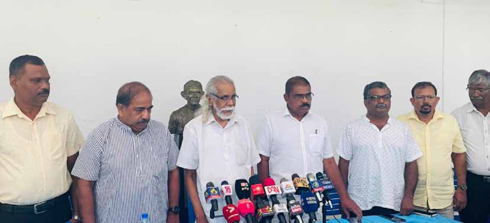
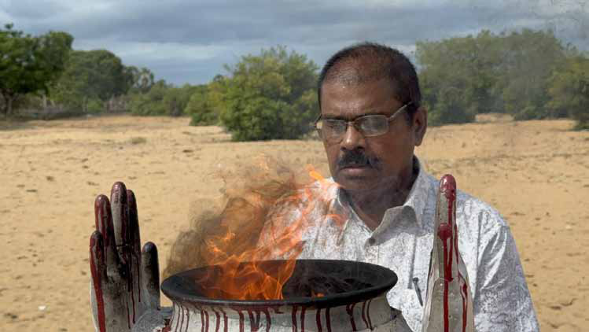

The Common Tamil Candidate Comedy Starring Ariyanethiran!
The Common Tamil Candidate Comedy Starring Ariyanethiran!
Jaffna Monitor hellojaffnamonitor@gmail.com 4 T he Tamil People's Assembly is throwing a grand party after finally convincing former MP P. Ariyanethiran to step up as their Tamil Common Candidate for the Presidential Election-probably because no one else was eager to take on the role! After what felt like endless hotel debates across the North and East, they've dubbed him the chosen one, celebrating as if they've just unlocked the secret to winning Tamil Eelam! Pakkiyaselvam Ariyanethiran from Ambilanthurai, Paduvankarai, in Batticaloa, has become social media's latest meme sensation. As one witty political observer quipped, back in the LTTE days, it was always the Eastern fighters who got the short end of the stick-sent North to fight someone else's battles. Fast forward to today, and it seems Ariyanethiran is reprising that role, except now he's the East's official 'scapegoat' for a few Northerners' grand ambitions! But here's the twist-a political observer wrote that his family used to be die-hard supporters of the United National Party! Back in the day, especially during Thanthai Chelva's (S. J. V. Chelvanayakam) time, they'd say that leaning toward Tamil nationalist politics-particularly anything tied to the North-was a surefire way to invite bad luck. Now, irony's having a field day as someone from that very family is being paraded around as the new champion of Tamil nationalism! Talk about a plot twist! Former EROS Member of the Parliament and writer Alagu Gunaseelan didn't hold back in his spicy piece for Arangam News, an East- based website known for embracing different voices and opinions. He pointed out that Ariyanethiran, born in 1955, was completely clueless about Tamil nationalist politics until 1985. His sudden interest in the cause only sparked during Kumarappa's era, the then LTTE chief of Batticaloa and Ampara districts, and it wasn't exactly out of passion-it was more The Common Tamil Candidate Comedy Starring Ariyanethiran! From East to Least: BY: Our Special Correspondent Jaffna
Jaffna Monitor hellojaffnamonitor@gmail.com 5 about protecting his family's property and wealth. The plot thickened when Kumarappa fell for one of Ariyanethiran's relatives, cementing their alliance. Gunaseelan further revealed that Ariyanethiran's rise to fame continued under Karuna Amman, the then-powerful military chief of the LTTE, thanks to his cosy connections with locals and relatives from Paduvankarai, like David, Thambirasa, Thayamoorthy, Thurai, and Kausalyan. Gunaseelan didn't stop there, pointing out that Ariyanethiran practically swiped a media outlet in Batticaloa to reinvent himself as a journalist, serving the Tamil press during Karuna's reign. According to Gunaseelan, whether it's media or politics, Ariyanethiran has mastered the art of "unethical behaviour." And as he cheekily put it, "birds of a feather flock together," with several Northern writers now jumping on the bandwagon to back him up without hesitation! Ariyanethiran, who proudly thumps his chest, claiming he was brought into politics by LTTE supremo Prabhakaran, might want to add a little footnote explaining how that actually happened. After the LTTE formed the Tamil National Alliance (TNA), he ran in the 2004 parliamentary elections on the TNA ticket in Batticaloa District. But, in a dramatic

Jaffna Monitor hellojaffnamonitor@gmail.com 6 twist, the all-powerful LTTE split in two, with the Eastern fighters led by Karuna Amman breaking away. In that election, Ariyanethiran-known for his unwavering support of the Northern Tigers - ranked fifth in the TNA based on preferential votes, where only the top four were elected, leaving him without a seat. One political observer noted that his blind allegiance to the Northern Tigers was a significant reason for his failure to secure a position. The lucky ones who did get elected were Thambappillai Kanagasabai, Thangeswary Kathiraman, Senathirajah Jeyanandamoorth and Kingsley Rasanayagam. But here's where it gets even juicier: the Tigers, who were not so thrilled with Kingsley Rasanayagam's closeness to Karuna Amman, kidnapped him and pressured him into resigning his MP position. And who swoops in through the Tigers' backdoor? None other than Ariyanethiran sneaked his way into Parliament with the same finesse he used to become a journalist-showing neither political decency nor integrity! The 2004 parliamentary election took place on April 2, and by May, Kingsley Rasanayagam had resigned, clearing the path for Ariyanethiran, who eagerly took his oath in Parliament on May 18. But here's the real twist-Ariyanethiran won't soon forget that oath date, especially considering the eerie coincidence that exactly five years later, on May 18, 2009, the LTTE military was defeated at Mullivaikkal on the very same day. Coincidence? An Eastern writer couldn't help but wonder aloud. Adding to the intrigue, even after resigning from his position as a Member of Parliament, Kingsley Rasanayagam was not spared by the LTTE; he was assassinated by the Tigers on October 19, 2004. Numerous hush-hush rumours are suggesting that Ariyanethiran may have had a hand in the assassination- not directly, of course. What's even more curious is that, to this day, Ariyanethiran has never spoken out against the killing of the man whose seat he unethically slipped into in Parliament. The Tamil Common Candidate saga is unfolding with all the gravitas of a Shakespearean drama-yet, as one political observer noted, it's hard not to see it as more of a farce than a tragedy. An MoU was signed with great fanfare by seven political heavyweights-each representing their

Jaffna Monitor hellojaffnamonitor@gmail.com 7 respective parties-Selvam Adaikalanathan (TELO), C.V. Wigneswaran (Tamil People's Alliance), D. Siddarthan (PLOTE), N. Srikantha (Tamil Nationalist Party), Suresh Premachandran (EPRLF), P. Iyngaranesan (Tamil Nationalist Green Movement), and S. Venthan (Democratic Cadres Party). But here's where the plot takes a comedic turn- these seasoned politicians, with decades of experience in councils and Parliament (with the exception of the Democratic Cadres Party), have somehow found themselves sharing the stage with just seven individuals-civil society activists T. Vasantharajah, S.C. Jothilingam, Prof. K.T. Kanesalingam, Selwyn Irenaeus, and R. Wigneswaran, along with political analysts A. Jatheendra and M. Nilanthan-a motley crew dubbed the 'Tamil People's Assembly. A political observer, in conversation with Jaffna Monitor, questioned the absurdity of these political parties signing an MoU with mere individuals. Is this making a mockery of democracy? Another political observer, in conversation with Jaffna Monitor, noted that it's almost as if the political veterans, who have spent decades navigating the choppy waters of Tamil politics, have suddenly agreed to a script where they're on equal footing with these seven individuals. The so-called Tamil People's Assembly, now being paraded as a grand civil body, is little more than a small ensemble tasked with 'managing' the very politicians who have been in the trenches of both armed struggle and democratic battles. As another political commentator quipped, this arrangement doesn't just blur the lines of democracy-it turns the whole play into a caricature. Another observer pointed out that the Tamil People's Assembly is being hyped as a majestic civil body when, in reality, the majority of civil societies from the North and East were not included. Let's dive into the swirling questions around these civil organization representatives- especially those individuals who've somehow been elevated to the same status as political parties. How ready are these seven politically motivated folks, who've been plucked from their day jobs in government service, teaching, and whatever else they do, to fully commit to public life? Are they really prepared to shoulder the same level of responsibility as the seasoned political party reps who signed this agreement? And speaking of responsibility, where's the gender equality they've been preaching? These civil organizations have been so vocal about women's representation in politics, yet somehow didn't think to include even one female representative in this supposedly all- inclusive framework. Even after students from Jaffna and Southeastern universities and the Association of Relatives of the Disappeared threw their support behind the common candidate, they weren't given representative status. What's up with that? And now, let's talk geography. Among the seven civil representatives, three hail from Trincomalee, Ampara, and Batticaloa, while the other four are from Jaffna. So, why aren't districts like Mullaitivu, Vavuniya, Mannar, and Kilinochchi-areas that have seen war and cultural erasure and hold deep emotional significance-getting any representation? Are there really no civil representatives from Mullaitivu, Mannar, Vavuniya, and Kilinochchi in the Tamil People's Assembly? Or, if there are, do they just not have enough clout to make it into this common framework? It makes you wonder, doesn't it? It's almost comical that out of the fourteen stakeholders in this so-called 'Tamil Common Framework,' not a single one was willing to step up as the common candidate," a
Jaffna Monitor hellojaffnamonitor@gmail.com 8 political observer noted. Instead, they pushed Ariyanethiran-an Ilankai Tamil Arasu Kachchi (ITAK) central committee member- into the spotlight as the common Tamil candidate. What's particularly telling is that none of the seven civil representatives dared to volunteer-probably sensing the potential fallout. And even if someone had mustered the courage to run, the others would likely have shot them down. So, what did these individuals and the parties behind this farce do? They returned and picked a candidate from Ilankai Tamil Arasu Kachchi (ITAK), the party they've criticized in the most colourful, unparliamentary terms. And to add insult to injury, the political parties supporting this joke didn't even give him a symbol to run under. The Tamil common candidate is standing in the election as an independent. Parties like Tamil People's Alliance, TELO, PLOTE, and EPRLF aren't about to risk their symbols on this experiment. Even the Democratic Tamil National Alliance hesitated to offer their 'Kuthuvilakku' (oil lamp) symbol, fearing it might come back to haunt them in future elections if things go south. Ultimately, the common candidate had to settle for the 'Sangu' (conch) symbol, assigned by the election commission as an independent. It's like they're saying, 'Good luck, you're on your own!' Credible sources told Jaffna Monitor that the Tamil Common Framework scoured the world, searching high and low for the perfect common candidate-someone who shouldn't belong to any party, should be from the East, should be a woman, and should gracefully exit politics after the election. But after all that effort, they were left with just two options: Ariyanethiran or K.V. Thavarasa-both full- time politicians and both central committee members of the same ITAK, the party they've been criticizing for ages. And who did they pick? Ariyanethiran-a full-time politician who checks none of those boxes, except for being from the East. Talk about missing the mark! Adding to the comedy, there's a huge disconnect between the framework's representatives and Ariyanethiran. The

Jaffna Monitor hellojaffnamonitor@gmail.com 9 framework insists the candidate shouldn't re-enter politics after the election, but Ariyanethiran clearly missed the memo. He said he's just a 'symbol' until September 22 and won't be responsible for anything after that- basically, leaving the framework to clean up the mess, he indirectly hinted. They claimed that by fielding a common Tamil candidate, they were demonstrating that the Tamils had united as a nation. But if that were the case, how should the announcement have been made? Instead of a grand reveal before a massive crowd from the Northern and Eastern provinces, it ended up being a low-key press conference at Thanthai Selva Hall—with hardly anyone in attendance. And guess who didn't show up? The leaders of the Tamil People's Alliance, TELO, and PLOTE. Their excuse? A parliamentary session. Some didn't even bother to send representatives. And let's be honest, even if they had planned a grand function, who would have attended? So, they safely confined themselves to a small hall, avoiding the embarrassment of empty seats. The announcement itself was a failure, and if this is what they call unity, it's off to a shaky start. They also claimed they were sending a strong message to the international community that Tamils are standing together. But did the framework even consider discussing their grand plan with the local diplomatic community-the very first step in sending a strong message to the international stage? Did they at least check in with India, the country they often claim has a moral obligation to solve the Tamil issue? The answer, of course, is a resounding no. These political leaders and civil society leaders seem to overlook that if this is being presented as the referendum of the Tamil people, yet in reality, many Tamils remain indifferent to this so-called common Tamil candidate, the candidate is likely to face a significant defeat. In that context, wouldn't it appear to the international community that the Tamil referendum has failed? Could this ultimately harm the Tamil cause? This situation is also raising concerns among ordinary Tamils: is this part of a broader agenda aimed at weakening the Tamil voice? Lastly, Ariyanethiran, who's quick to criticize the presidential candidates-Ranil Wickremesinghe, Sajith Premadasa, Anura Kumara Dissanayake, and Sarath Fonseka-for cheating the Tamils since 2009, might need a little history lesson. He should remember that his party backed Sarath Fonseka in the 2010 Sri Lankan presidential election. In the 2015 presidential election, they threw their support behind Maithripala Sirisena and Ranil Wickremesinghe, becoming unofficial partners of the then 'Good Governance' alliance, with Sampanthan becoming the opposition leader with the blessings of Sinhala parties. Let's not forget how his party and his former boss, Sampanthan, were all smiles with Ranil during their 2015 political honeymoon. When Ranil's deputy, Sajith Premadasa, broke away from Ranil and ran in the 2019 presidential election, the TNA threw its support behind him unconditionally-despite Sajith promising in front of these TNA leaders to build a thousand viharas in the Tamil-speaking North and East. Anura Kumara Dissanayake's party, the JVP, went to court and orchestrated the split of the North and East. Yet, Anura was still handed the opposition whip post, courtesy of the TNA's support-where ITAK, the very party in which Ariyanethiran is a central committee member, is the chief constituent. If that's not Ariyanethiran's selective memory at work, then what is?